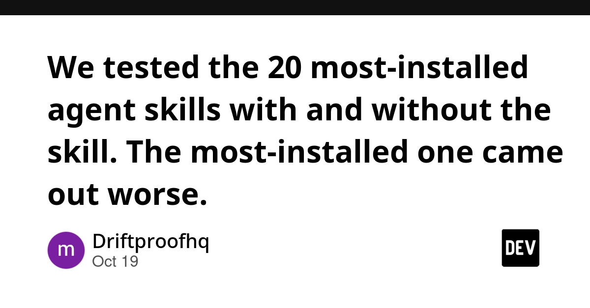
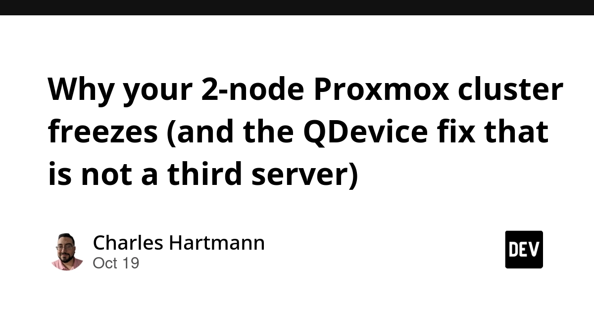
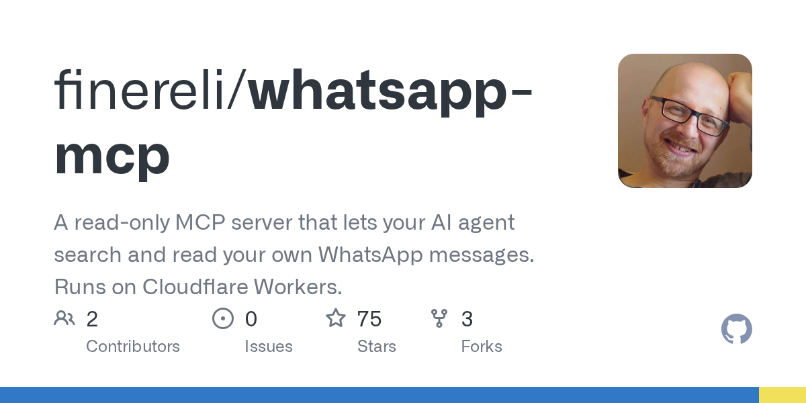

🔥 Top 3 (must read)
Show HN: Sphinx – A hook that quizzes you on your AI's code before shipping
(discussion) Sphinx is a hook that asks you questions about code your AI assistant wrote before you ship it. It got strong attention on Hacker News (242 points, 85 comments). Why it matters to you: It tackles a real team problem: engineers who merge AI code they don't understand. That is useful for both your code review culture and your plans for AI adoption.
S
We tested the 20 most-installed agent skills with and without the skill. The most-installed one came out worse.
The authors took the top 20 skills from skills.sh (snapshot of 17 Oct) and ran each task twice, once with the skill and once without. Sonnet 5.5 and Opus 5.5 did the tasks and Haiku 5.5 judged them, for 40 results. The most-installed skill made the output worse. Why it matters to you: Install counts do not show quality. Before your team adopts shared Claude Code skills, compare results with and without them.

How to get correct SQL from AI: give it the schema, the dialect, and EXPLAIN
SQL written by AI usually runs, but it can quietly return wrong numbers that still look right. The post lists the most common mistakes and gives three inputs that fix most of them: the schema, the SQL dialect, and the query plan. Why it matters to you: It is a simple prompting habit your backend team can start using today with Claude Code or Cursor.
🛠 Tools & releases
How to deploy a website at a low cost: Vercel vs Cloudflare
: a solo founder compares the two platforms for keeping hosting costs close to zero on a micro-SaaS.
Why your 2-node Proxmox cluster freezes (and the QDevice fix)
: a clear explanation of quorum (the rule that a majority of nodes must agree). With only two nodes, each node can block the other, so you don't get the backup you expected. A small QDevice fixes this without a third server.

🤖 AI for developers
llm-echo 0.5
: a fake "model" for the LLM CLI. It repeats your prompts back and does not call a real LLM. It now simulates token counts for tool calls and system prompts. This is a good pattern for testing LLM apps without paying for API calls.
S
👔 Engineering & teams
llm-tools-datasette 0.1.1
: LLM 0.33 switched from httpx to httpx2. This broke plugins that used httpx without listing it as their own dependency. It is a good reminder to declare every package your code imports directly.
S
🎯 For me
Sphinx and the agent-skills test both answer one EM question: how do you keep AI-written code reviewed and trustworthy? The AI SQL post is the most practical one for your Node.js backend work.
💡 App ideas & indie builds
WhatsApp MCP running free on Cloudflare
(discussion): an MCP server that connects AI assistants to WhatsApp and runs on Cloudflare's free tier. Problem: connecting chat apps to agents without paying for a server. Inspiration: a free-tier serverless MCP is a cheap way to ship small agent tools.

The Zelda timeline before the Ocarina of Time remake
(discussion): a guide to the series story for fans before a new release. Problem: a long, confusing story is hard to catch up on. Inspiration: "catch up before the big release" sites ride a fixed launch date, and that date brings traffic.
500 clocks in one 6.3 MB HTML file by Opus 5.5
(discussion): 500 clock designs made by an AI model, all in one HTML file. Problem: none really; it is a creative demo. Inspiration: it shows how far one AI session can go on one big, focused creative task.
T
Ranet3 – policy-routed IPsec mesh SD-WAN
(discussion): a fast mesh network that connects many sites over IPsec, with routing based on rules. Problem: linking offices and clouds without expensive SD-WAN vendors. Inspiration: a niche infra tool built by one team can compete with big vendors.
R
🎓 Try this
Run your own version of the agent-skills test. Pick one Claude Code skill or CLAUDE.md rule your team uses. Run the same 2 tasks with it and without it, then compare the output. Keep the skill only if it clearly helps.